1 前期背景：
现有DNS、DHCP服务器域控为Windows 2003 系统，需要将Windows 2003 域控升级为2008.
2 环境：
主域控 ：Server 2003 X86
迁移域控服务器：Server 2008 R2 X64
3 操作步骤
3.1 配置Windows server 2008域控兼容环境
- 首先将
Windows 2008系统加入Windows 2003域控的域中。这里为测试的，暂为shdc.com。加入以后重启2008系统。

- 重启后用
shdc\administrator登录2008系统。在测试进行之前，我们来查看一下， 现有的FSMO角色情况。（运行CMD，输入etdom query fsmo），显示结果所有的角色都在2003的域控shdc-1中。
在升级域控到
Windows Server 2008之前，必须进行相关的扩展，这一点，与从Windows Server 2000域升级到Windows Server 2003域一样。在这里我们必须在原Windows Server 2003域控制 器上运行Windows Server 2008的ADPREP工具，该工具位于Windows Server 2008光盘中的Source\adprep目录下，请复制adprep目录到Windows Server 2003域控制上的任意磁盘分区中（计算机名为:shdc-1），本案例将此文件夹复制 到SHDC-1的磁盘分区C。特别说明，敬请留意：
原 Windows Server 2000域升级到 Windows Server 2003域，只需对 Forest和 Domian进行扩展，但在 Windows Server 2003域升级到 Windows Server 2008域中，还必须对 RODC进行扩展，以便 Windows Server 2008能在基于 Windows Server 2003的域中担任域控制器类型角色
下面操作在
shdc-1（域控制器）上进行操作。
开始 －运行 －CMD，进入C分区的ADPREP目录输入 adprep /forestprep根据提示，选择”C “，并按下Enter键继续。

- 完成
Forest扩展。接下来的是RODC请输入：adprep /rodcprep（从显示结果
来看，似乎这些扩展已经更新了，但之前尝试过跳过 RODC扩展时，不能继续。）
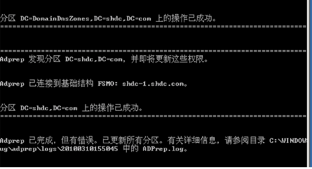
- 完成
RODC的扩展之后，接下来进行的是Domain的扩展。 输入：adprep /domainprep /gpprep结果出现如下错误。
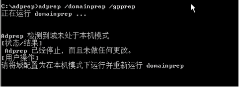
网络搜索发现，没有提升域模式，在Active Directory用户和计算机中点击右键，提升域功能级别。
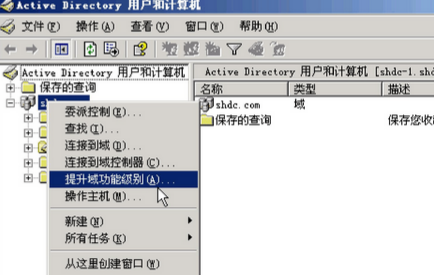
选择 Windows 2000纯模式。点提升。
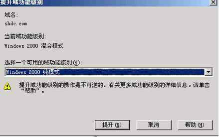
- 再次运行
adprep /domainprep /gpprep，如下图。

- OK，我们已经做好了将 Windows Server2008（计算机名 Server2008）提升为域控 制器的准备工作。
3.2 提升Windows 2008 为域控制器
- 现在，以
shdc\administrator身份登录成员服务器Server 2008。开始 －运行 － dcpromo（和Windows 2003中的类似）
- 出现”
Active Directory 域服务安装向导“，在该向导中，我们选中”`使用高级模式
安装“，点击下一步`：
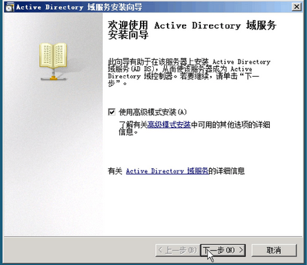
- 在”
Active Directory 域服务安装向导“中，我们选中”现有林“中的”`向现有域添加
域控制器”，并点击“下一步` ”
- 点击“
下一步”继续
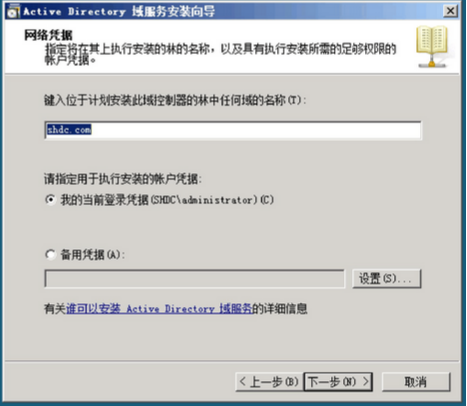
- 选择域，点击“
下一步”继续
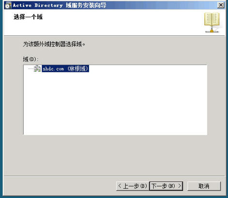
- 选择站点，点击“ 下一步 ”继续
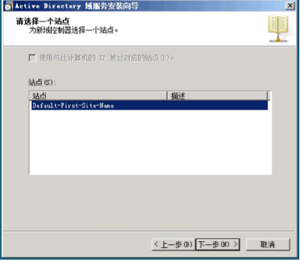
- “ 其他域控制器选项”，以这个选项中，默认的 角色为“ DNS服务器“和” 全局编录
“ ，而” 只读域控制器“，则为不可选，点击“ 下一步 ”继续
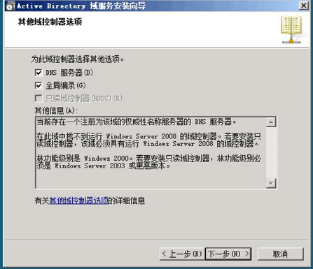
- 选择”是”继续。

- 默认选项，从现有的域控制器上接收更新数据。点击“下一步 ”继续

- 点击“ 下一步 ”继续

- 点击“ 下一步 ”继续

- 设置目录服务还原模式密码。
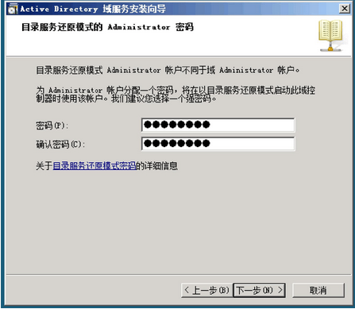
- 点击“ 下一步 ”开始提升 Server 2008为域控制器。

- 其过程如图：

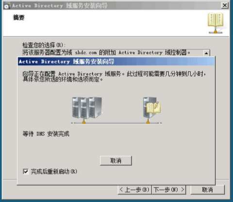
- 因为选中了“ 完成后重新启动 “，故 DCPROMO完成之后，系统自动启动。让我们来看 Server 2008提升为域控制器之后，ADUC的对比情况。
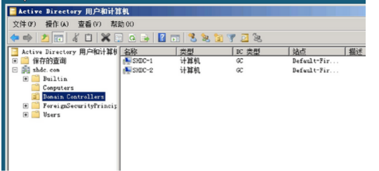
3.3 角色转移
接下来的工作，就是传说中的
FSMO角色的转移，首先我们要进行的是对架构主机角色的转移，在这之前，我们必须使用regsvr32 schmmgmt.dll来注册Active Directory 架构。以便利用MMC工具来添加 架构 管理控制台。这个地方要注意，要以管理员身份运行CMD，否则会出错。2008直接在运行里输CMD似乎权限不够


开始 －运行 －MMC，打开微软管理控制台。这里我们要添加Activer Directory架构管理控制台。如下图。
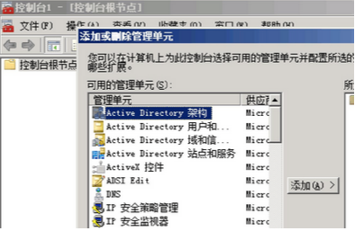
- 右键单击“ Active Directory 架构 “根部，并且选择 “ 更改Active Directory 域控制器 “
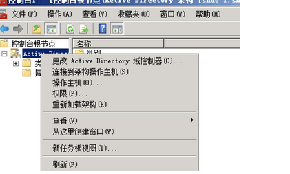
- 选取要连接的域控制器
shdc-2.shdc.com。
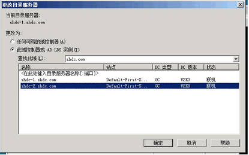
- 再次右键单击“ Active Directory 架构 “根部，并且选择 “ 操作主机 “在对话框中，点击“ 更改“，系统会提示您” 你确实要更改操作主机？“点击” 是 ”继续

系统提示架构主机角色的已成功转移到 shdc-2.shdc.com 。

- 接下来的工作，就是分别将RID、PDC、基础结构主机角色转移到 shdc-2.com 。
请在运行中输入
dsa.msc打开Active Directory 用户和计算机。
注意：在以下主机角色转移之前，请右键 shdc.com根部，选择“更改域控制器“，
并且选中 2008域控。
请右键 shdc.com根部，选择“ 操作主机“，依次将RID、PDC、Infrastructure主机角色转移到 shdc-2.com


- 最后我们需要做的是将域命名（Domain Name）主机，转移到 shdc-2.com上，打开 Active Directory域和信任关系，完成域命名主机的转移。


- 最后需要做的是取消
shdc-1.com的GC（全局编录）角色，打开Active Directory 站点和服务，依次选中Site – Default First Site Name – Servers – shdc-1，右键单击NTDS Setting，选择属性，然后将全局编录前面的勾去掉，只何留shdc-2.com（Windows 2008）为GC即可。
- 最后确定一下各种主机角色的状态，在运行里输入 cmd进行命令提示行，输入
1 | netdom query fsmo |

- 至此 Windows Server 2003迁移到 Windows Server 2008完毕。
4 错误
4.1 错误1：
输入adprep /rodcprep报错
症状如下：
1 | Adprep could not contact a replica for partition DC=DomainDnsZones,DC=Contoso,DC=com |
原因是：
分区或在错误消息中不再存在引用分区
为引用的分区或分区结构主机已经强行降级或离线。
解决办法：
参考资料：
https://support.microsoft.com/zh-cn/kb/949257
http://bbs.51cto.com/thread-1067016-1-1.html
http://www.68idc.cn/help/jiabenmake/qita/2014040986015.html
备注：微软给出的fixfsmo.vbs脚本无需更改内容（当时纠结了一天，挺着心肝尝试了下，惨确定无须修改。)
Fixfsmo.vbs脚本内容如下
1 | '-------fixfsmo.vbs------------------ |
分别运行运行脚本：
1 | cscript fixfsmo.vbs DC = ForestDnsZones，DC = dealeasy，DC = local |

问题解决
5 附件：
链接: http://pan.baidu.com/s/1kVBPuuV 密码: aevv